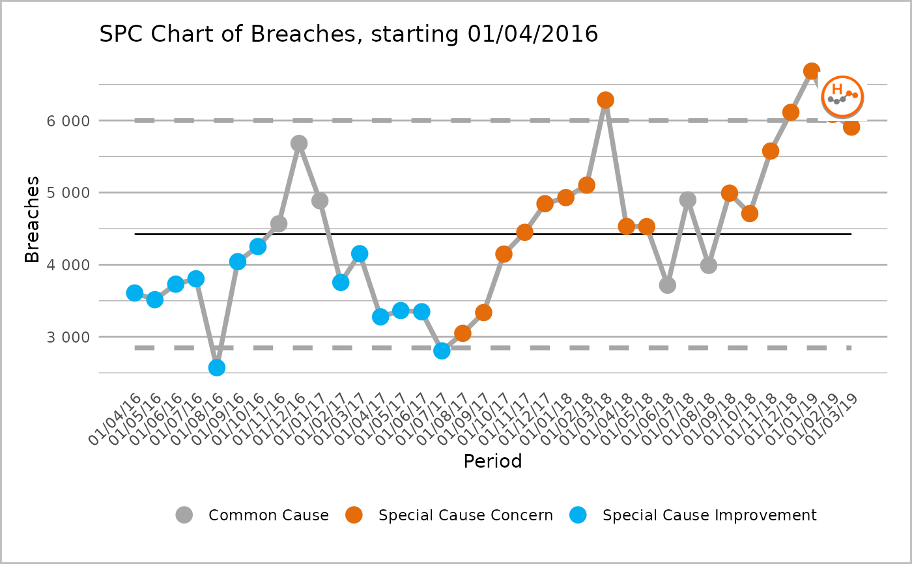
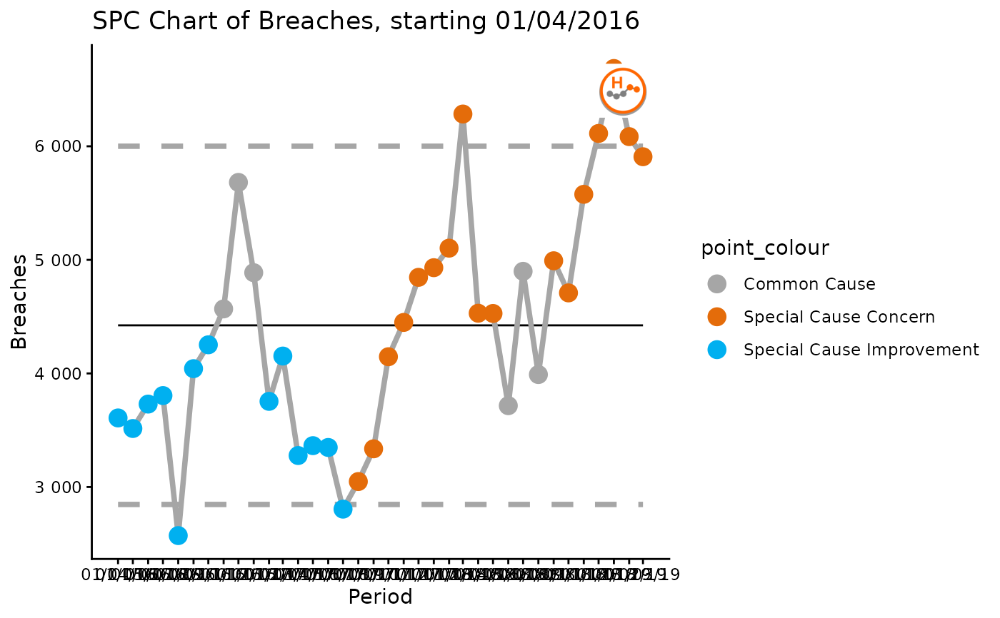

SPC Plotting Function
ptd_spc.Rdptd_spc returns a plot object or data table with SPC values using NHSI 'plot the dots' logic.
ptd_spc( .data, value_field, date_field, facet_field, rebase = ptd_rebase(), fix_after_n_points = NULL, improvement_direction = "increase", target = ptd_target(), trajectory, screen_outliers = TRUE )
Arguments
| .data | A data frame containing a value field, a date field, and a category field (if for faceting). There should be no gaps in the time series for each category. |
|---|---|
| value_field | Specify the field name which contains the value data, to be plotted on y axis. Field name can be specified using non-standard evaluation (i.e. no quotation marks). |
| date_field | Specify the field name which contains the date data, to be plotted on x axis. Field name can be specified using non-standard evaluation (i.e. no quotation marks). |
| facet_field | Optional: Specify field name which contains a grouping/faceting variable. SPC logic will be applied to each group separately, with outputs combined. Currently accepts 1 variable only. Field name can be specified using non-standard evaluation (i.e. no quotation marks). |
| rebase | Specify a date vector of dates when to rebase, or, if facet_field is set, a named list of date vectors
of when to rebase. Each item in the list should be named after the facet you wish to rebase. See |
| fix_after_n_points | Specify a number points after which to fix SPC calculations. |
| improvement_direction | Specify whether process improvement is represented by an increase or decrease in measured variable, or is neutral. Accepted values are 'increase' for increase as improvement, 'decrease' for decrease as improvement, and 'neutral' where neither direction represents an improvement. Defaults to 'increase'. |
| target | Specify a single value, which will apply the same target to every facet of an SPC chart,
or named values of targets, where the names correspond to the names of the facets, in order to
have different targets for each facet. See |
| trajectory | Specify a field name which contains a trajectory value. Field name can be specified using non-standard evaluation (i.e. no quotation marks). |
| screen_outliers | Whether we should screen for outliers or not when calculating the control limits. Defaults to
|
Value
A ggplot2 object of the spc charts. This will automatically print the plot, but can also be saved as an object if you want to manipulate it further.
Details
This function is designed to produce consistent SPC charts across Information Department reporting, according to the 'plot the dots' logic produced by NHSI. The function can return either a plot or data frame.
Examples
#> #>#> #> #>#> #> #>data("ae_attendances") # Pick a trust at random to look at their data for two years trust1 <- subset(ae_attendances, org_code == "RJZ" & type == 1) # Basic chart with improvement direction decreasing ptd_spc(trust1, value_field = breaches, date_field = period, improvement_direction = "decrease" )# Pick a few trust, and plot individually using facet # Also set the x-axis scale to vary for each and date groups to 3 months orgs <- c("RAS", "RJZ", "RR1", "RJC", "RQ1") trusts4 <- filter(ae_attendances, org_code %in% orgs, type == 1) s <- ptd_spc(trusts4, value_field = breaches, date_field = period, facet_field = org_code, improvement_direction = "decrease" ) plot(s, fixed_y_axis_multiple = FALSE, x_axis_breaks = "3 months")# Save the first chart as an object this time then alter the ggplot theme my_spc <- ptd_spc(trust1, value_field = "breaches", date_field = "period", improvement_direction = "decrease" ) plot(my_spc) + ggplot2::theme_classic()